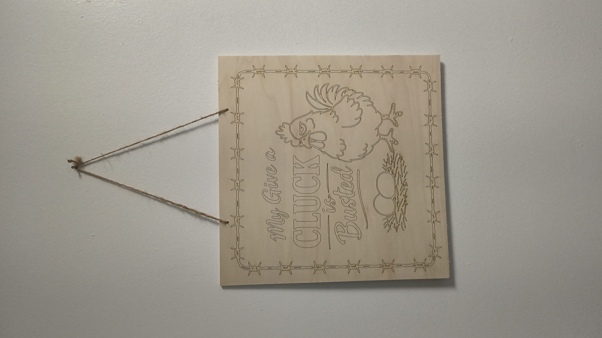
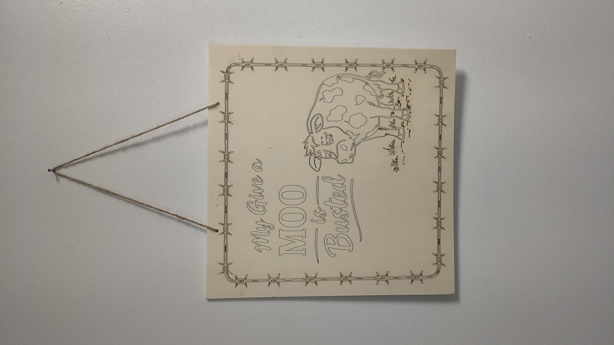
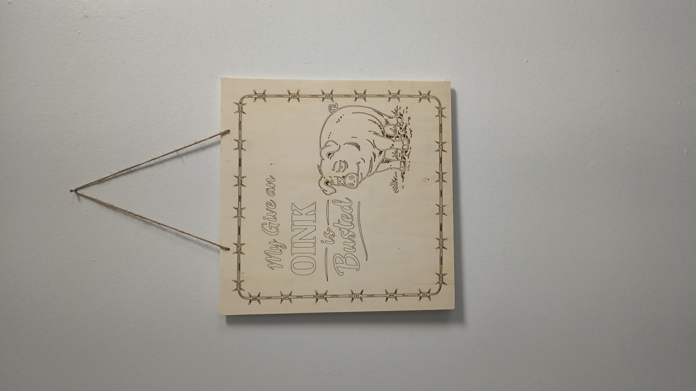

Welcome to Mavericks Mark!
I design and handcraft custom engraved signs that bring personality and character to homes, farms, and businesses.
Each piece is made with care, creativity, and a touch of Southern pride.


